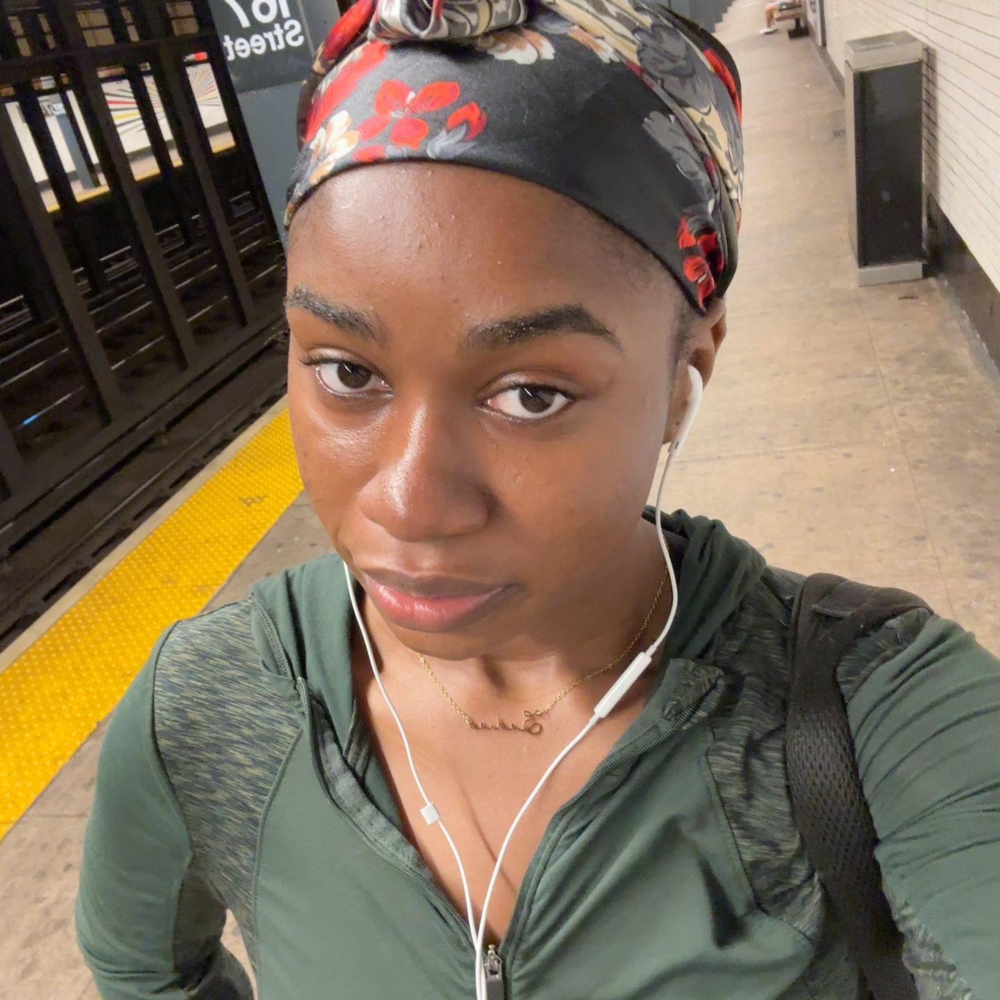

Sadia Ali, Lab 4
MEDPL 150

Creative Statement
Hi, I'm Sadia Ali. I'm drawn to the small, easily missed moments of everyday city life: the commute, the crowded platform, the quiet pause between one place and the next. I'm in this class to learn how to turn those moments into images and design that make people stop and look twice. I'm most interested in photography, and I want to learn how to pair it with illustration and typography so that a picture and a few words can say more together than either could alone. I also enjoy learning how color, framing, and light change the mood of a scene, and I want to get better at making deliberate choices instead of relying on luck.
The media I want to make includes photo series, collages, and simple posters or web pages that tell a story. My inspirations come from street photographers who treat ordinary people with dignity, and from graphic designers who use color and pattern boldly. The themes I want to explore are identity, movement, and belonging: how we present ourselves, how we travel through shared spaces, and how a place can feel like home. By the end of this course I hope to have a small body of work that feels personal, honest, and carefully made. Most of all, I want my work to invite viewers into my point of view and help them notice something new about the places they pass through every day.